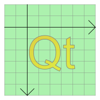

QGraphicsSimpleTextItem Class
The QGraphicsSimpleTextItem class provides a simple text path item that you can add to a QGraphicsScene. More...
| Header: | #include <QGraphicsSimpleTextItem> |
| CMake: | find_package(Qt6 REQUIRED COMPONENTS Widgets) target_link_libraries(mytarget PRIVATE Qt6::Widgets) |
| qmake: | QT += widgets |
| Inherits: | QAbstractGraphicsShapeItem |
Public Types
| enum | anonymous { Type } |
Public Functions
| QGraphicsSimpleTextItem(QGraphicsItem *parent = nullptr) | |
| QGraphicsSimpleTextItem(const QString &text, QGraphicsItem *parent = nullptr) | |
| virtual | ~QGraphicsSimpleTextItem() |
| QFont | font() const |
| void | setFont(const QFont &font) |
| void | setText(const QString &text) |
| QString | text() const |
Reimplemented Public Functions
| virtual QRectF | boundingRect() const override |
| virtual bool | contains(const QPointF &point) const override |
| virtual bool | isObscuredBy(const QGraphicsItem *item) const override |
| virtual QPainterPath | opaqueArea() const override |
| virtual void | paint(QPainter *painter, const QStyleOptionGraphicsItem *option, QWidget *widget) override |
| virtual QPainterPath | shape() const override |
| virtual int | type() const override |
Detailed Description
To set the item's text, you can either pass a QString to QGraphicsSimpleTextItem's constructor, or call setText() to change the text later. To set the text fill color, call setBrush().
The simple text item can have both a fill and an outline; setBrush() will set the text fill (i.e., text color), and setPen() sets the pen that will be used to draw the text outline. (The latter can be slow, especially for complex pens, and items with long text content.) If all you want is to draw a simple line of text, you should call setBrush() only, and leave the pen unset; QGraphicsSimpleTextItem's pen is by default Qt::NoPen.
QGraphicsSimpleTextItem uses the text's formatted size and the associated font to provide a reasonable implementation of boundingRect(), shape(), and contains(). You can set the font by calling setFont().
QGraphicsSimpleText does not display rich text; instead, you can use QGraphicsTextItem, which provides full text control capabilities.

See also QGraphicsTextItem, QGraphicsPathItem, QGraphicsRectItem, QGraphicsEllipseItem, QGraphicsPixmapItem, QGraphicsPolygonItem, QGraphicsLineItem, and Graphics View Framework.
Member Type Documentation
enum QGraphicsSimpleTextItem::anonymous
The value returned by the virtual type() function.
| Constant | Value | Description |
|---|---|---|
QGraphicsSimpleTextItem::Type | 9 | A graphics simple text item |
Member Function Documentation
[explicit] QGraphicsSimpleTextItem::QGraphicsSimpleTextItem(QGraphicsItem *parent = nullptr)
Constructs a QGraphicsSimpleTextItem.
parent is passed to QGraphicsItem's constructor.
See also QGraphicsScene::addItem().
[explicit] QGraphicsSimpleTextItem::QGraphicsSimpleTextItem(const QString &text, QGraphicsItem *parent = nullptr)
Constructs a QGraphicsSimpleTextItem, using text as the default plain text.
parent is passed to QGraphicsItem's constructor.
See also QGraphicsScene::addItem().
[virtual noexcept] QGraphicsSimpleTextItem::~QGraphicsSimpleTextItem()
Destroys the QGraphicsSimpleTextItem.
[override virtual] QRectF QGraphicsSimpleTextItem::boundingRect() const
Reimplements: QGraphicsItem::boundingRect() const.
[override virtual] bool QGraphicsSimpleTextItem::contains(const QPointF &point) const
Reimplements: QGraphicsItem::contains(const QPointF &point) const.
QFont QGraphicsSimpleTextItem::font() const
Returns the font that is used to draw the item's text.
See also setFont().
[override virtual] bool QGraphicsSimpleTextItem::isObscuredBy(const QGraphicsItem *item) const
Reimplements: QAbstractGraphicsShapeItem::isObscuredBy(const QGraphicsItem *item) const.
[override virtual] QPainterPath QGraphicsSimpleTextItem::opaqueArea() const
Reimplements: QAbstractGraphicsShapeItem::opaqueArea() const.
[override virtual] void QGraphicsSimpleTextItem::paint(QPainter *painter, const QStyleOptionGraphicsItem *option, QWidget *widget)
Reimplements: QGraphicsItem::paint(QPainter *painter, const QStyleOptionGraphicsItem *option, QWidget *widget).
void QGraphicsSimpleTextItem::setFont(const QFont &font)
Sets the font that is used to draw the item's text to font.
See also font().
void QGraphicsSimpleTextItem::setText(const QString &text)
Sets the item's text to text. The text will be displayed as plain text. Newline characters ('\n') as well as characters of type QChar::LineSeparator will cause item to break the text into multiple lines.
See also text().
[override virtual] QPainterPath QGraphicsSimpleTextItem::shape() const
Reimplements: QGraphicsItem::shape() const.
QString QGraphicsSimpleTextItem::text() const
Returns the item's text.
See also setText().
[override virtual] int QGraphicsSimpleTextItem::type() const
Reimplements: QGraphicsItem::type() const.